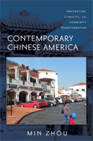

A sociologist of international migration examines the Chinese American experience
A sociologist of international migration examines the Chinese American experience


 A sociologist of international migration examines the Chinese American experience
A sociologist of international migration examines the Chinese American experience

|  |
Contemporary Chinese AmericaImmigration, Ethnicity, and Community TransformationMin Zhou, foreword by Alejandro Portespaper EAN: 978-1-59213-858-6 (ISBN: 1-59213-858-6) |
"Contemporary Chinese America is full of richly detailed analyses and insightful interpretations. Most remarkable is the breadth and depth of the coverage. From New York’s Chinatown to California’s ethnoburbs and from entrepreneurship to gender, ethnicity, education, and intergenerational relations, this important book is an indispensable guide to understanding the experiences of Chinese immigrants and their children."
—Nancy Foner, Distinguished Professor of Sociology, Hunter College and Graduate Center of the City University of New York
Contemporary Chinese America is the most comprehensive sociological investigation of the experiences of Chinese immigrants to the United States—and of their offspring—in the late twentieth and early twenty-first centuries. The author, Min Zhou, is a well-known sociologist of the Chinese American experience. In this volume, she collects her original research on a range of subjects, including the causes and consequences of emigration from China, demographic trends of Chinese Americans, patterns of residential mobility in the U.S., Chinese American "ethnoburbs," immigrant entrepreneurship, ethnic enclave economies, gender and work, Chinese language media, Chinese schools, and intergenerational relations. The concluding chapter, "Rethinking Assimilation," ponders the future for Chinese Americans. Also included are an extensive bibliography and a list of recommended documentary films.
While the book is particularly well-suited for college courses in Chinese American studies, ethnic studies, Asian studies, and immigration studies, it will interest anyone who wants to more fully understand the lived experience of contemporary Chinese Americans.
Excerpt available at www.temple.edu/tempress
"Through her sociological insight, Zhou's new book deepens our understanding of many aspects of contemporary Chinese America such as family, education, or enclave economy. Pushing the field to a new level, her scholarship is a must in race, ethnicity, and immigration studies."
—Haiming Liu, Professor of Asian American Studies, Cal Poly Pomona
"[A] thorough overview of the integration of Chinese immigrants in the US.... A welcome addition to immigration studies literature, the book makes an important contribution to Asian American studies literature, sociology, urban studies and geography. Highly Recommended."
—Choice
"[A] comprehensive, in-depth analysis of contemporary Chinese America. The work, based on rigorous quantitative analyses and qualitative fieldwork, is informative, thought provoking, theoretically sound, empirically rich, while simultaneously humanistic.... In sum, [this book] offers the most thorough sociological investigation to date of the multifaceted experiences of Chinese immigrants and their off-spring in the United States. It provides an excellent grounding for understanding the emerging trends, issues, and debates in 21st-century Chinese American community while posing some of the most important questions in the fields of Chinese American Studies and comparative immigration."
—The Journal of Chinese Overseas
"This book includes Zhou’s ten original case studies on different aspects of contemporary Chinese America representing some of the author’s finest research products. Each case study is refreshingly distinctive yet coherently linked to one another…Genuinely seeking a good understanding of how ethnicity affects communities as well as individuals in an individualistically driven American society, she thoughtfully frames relevant research questions and selects specific sites in which to investigate a fast-growing ethnic community…. Contemporary Chinese America has much to offer to both scholars and students in Asian American studies."
—Journal of Asian American Studies
"Min Zhou’s Contemporary Chinese America is a wonderful addition to the literature on Asian Americans, ethnicity, and immigration. It is also an especially helpful resource for students interested in race and class… Contemporary Chinese American is a must read for everyone interested in immigration, race, ethnicity, and contemporary Asian America."
—Contemporary Sociology
"In Contemporary Chinese America, Zhou has made an invaluable contribution to the fields of urban sociology, international migrations, and race and ethnic studies. As with her previous book, Chinatown, she continues to provoke new and important research questions."
—City and Community
"This is a comprehensive and well-written analysis of the current status of the Chinese-American community…. A major asset of this work is the chapter on Chinese women and their aspirations. The author does an excellent job of explaining how immigrants interpret the American dream in their terms…. This work is recommended for anyone interested in ethnicity and immigration."
—Multicultural Review
"In this book, Zhou contributes to theories of ethnic enclaves, segmented assimilation, and transnationalism, making it an essential reading not only for specialists in immigration and ethnicity but also for urban planners.... Contemporary Chinese America is a must-read for planners working in immigrant gateway regions or other localities where the Chinese populations have clustered. Neighborhood change cannot be understood without grasping the nuances of the settlement patterns of immigrant groups. Moreover, the successful adaptation of the children of immigrants in U.S. society depends on institutionally complete neighborhoods where different generations can dialogue with one another and participate in local civic life. Ethnic capital is the glue that holds Chinese society together in the United States."
—Journal of Planning Education and Research
"[S]cholars of contemporary Asian American life will find much of value in Zhou’s study. Overall, it offers a fascinating portrait not only of a specific ethnic group but also of the changing meanings of immigration, integration, and acculturation in modern America."
—The Journal of American Ethnic History
"Zhou is especially effective in drawing out the experiences and perspectives of working-class Chinese women, as seen in her discussion of the cultural values, personal aspirations, and sense of possibilities in the world inhabited by the seamstresses of New York’s Chinatown. Her inquiry into intergenerational relationships within immigrant households and the phenomenon of parachute kids in typically affluent transnational families further makes her work profoundly relevant to our understanding of contemporary Chinese America and some underlying challenges in its future."
—China Review International
List of Figures and Tables
Foreword, by Alejandro Portes
Acknowledgments
Introduction: A Personal Reflection on the Study of Chinatown and Beyond
PART I Historical and Global Contexts
1. The Chinese Diaspora and International Migration
PART II Immigration, Demographic Trends, and Community Dynamics
2. Demographic Trends and Characteristics of Contemporary Chinese America
3. In and Out of Chinatown: Residential Segregation and Mobility among Chinese Immigrants in New York City
4. Suburbanization and New Trends in Community Development: The Case of Chinese Ethnoburbs in the San Gabriel Valley, California, with Yen-Fen Tseng and Rebecca Y. Kim
PART III The Organizational Structure of the Ethnic Enclave
5. Immigrant Entrepreneurship and the Enclave Economy: The Case of New York City’s Chinatown
6. Chinese-Language Media in the United States
7. Chinese Schools and the Ethnic System of Supplementary Education
PART IV The Family and the New Second Generation
8. The Other Half of the Sky: Immigrant Women in Chinatown’s Enclave Economy
9. Negotiating Culture and Ethnicity: Intergenerational Relations in Chinese Immigrant Families
10. “Parachute Kids” in Southern California: The Educational Experience of Chinese Children in Transnational Families
PART V The Future of Chinese America
11. Rethinking Assimilation: The Paradox of “Model Minority” and “Perpetual Foreigner”
Appendix: Recommended Films on the Chinese American Experience
Notes
Bibliography
Index
 | Min Zhou is Professor of Sociology and Asian American Studies at the University of California, Los Angeles. She is the author of Chinatown (Temple) and The Transformation of Chinese America, co-author of Growing Up American, and co-editor of Asian American Youth and Contemporary Asian America. |
Asian American Studies
Sociology
Race and Ethnicity
Asian American History and Culture, edited by K. Scott Wong, Linda Trinh Võ, and Cathy Schlund-Vials.
Founded by Sucheng Chan in 1991, the Asian American History and Culture, series has sponsored innovative scholarship that has redefined, expanded, and advanced the field of Asian American studies while strengthening its links to related areas of scholarly inquiry and engaged critique. Like the field from which it emerged, the series remains rooted in the social sciences and humanities, encompassing multiple regions, formations, communities, and identities. Extending the vision of founding editor Sucheng Chan and emeriti editor Michael Omi and David Palumbo-Liu, series editors K. Scott Wong, Linda Trinh Võ, and Cathy Schlund-Vials continue to develop a foundational collection that embodies a range of theoretical and methodological approaches to Asian American studies.
© 2015 Temple University. All Rights Reserved. This page: http://www.temple.edu/tempress/titles/1978_reg.html.